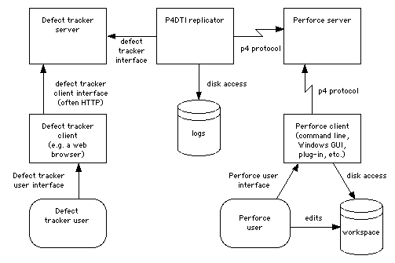

Perforce Defect Tracking Integration Project
This manual is the Perforce Defect Tracking Integration Administrator's Guide. It explains how to install, configure, maintain, and administer the Perforce Defect Tracking Integration (P4DTI).
The P4DTI connects your defect tracking system to Perforce, so that you don't have to switch between them and enter duplicate information about your work. It also links changes made in Perforce with defect tracker issues, making it easy to find out why a change was made, find the work that was done to resolve an issue, or generate reports relating issues to files or codelines. The P4DTI is intended to allow integrations with a number of different defect trackers. The only defect tracker supported by this release of the P4DTI is Bugzilla.
This document is intended for P4DTI administrators. Ordinary users of the defect tracker or Perforce should read the Perforce Defect Tracking Integration User's Guide. (For ideas on how to train your users on the P4DTI, see section 8, "Training and documentation".)
This guide does not describe the basics of using the P4DTI, Perforce, or the defect tracker. Read the Perforce Defect Tracking Integration User's Guide to understand the P4DTI from a user's perspective.
To install and run the P4DTI, you must:
The P4DTI works by taking over the job tracking system of Perforce and making the defect tracker's records appear as Perforce jobs. Perforce users can work with jobs more or less as described in the Perforce manuals, and their changes are reflected in the defect tracker. For more information on how Perforce handles jobs, see the Perforce User's Guide.
Perforce has a mechanism for linking jobs to changelists (the p4 fix command), to enable you to record the work done for a particular reason. The P4DTI makes these links appear in the defect tracker, making it easy to see what was done or is currently being done to resolve a defect.
The P4DTI replicator is a process that copies data between a defect tracker and a Perforce server to keep each one up to date with changes made in the other. This approach allows developers to do their routine defect resolution work entirely from their Perforce client, without using the defect tracker's interface. It also allows developers to relate their changes to defect tracking issues.
Figure 1 shows how the replicator communicates with the defect tracking server and the Perforce server.
The replicator maintains a one-to-one relationship between issues in the defect tracker's database and jobs in the Perforce repository. (An issue is a unit of work that the defect tracker tracks; some examples are bugs, change requests, and enhancement requests.) In other words, each issue has a corresponding job, and vice versa. The replicator keeps the contents of a configurable set of fields in the defect tracker's issues the same as the contents of the corresponding Perforce job, so that editing one edits the other.
The replicator also copies Perforce's links between jobs and changelists (called "fixes") to the defect tracker's database, and makes them visible in the defect tracker's user interface. Replication of links from Perforce to the defect tracker makes it possible to track, record, and check a number of things; in particular, it makes it possible to track and record the changes made for each issue, and find out why a change was made in terms of issues.
The replicator polls the defect tracking server and the Perforce server at regular intervals to get a list of recent changes, and attempts to propagate these changes to the other system. If a defect tracker issue is changed at the same time as the corresponding Perforce job, the replicator sends an e-mail with the overwritten Perforce job data to the following people:
Most defect trackers have an idea of workflow - a set of rules that control who can do what to which issues. The replicator enforces the defect tracker's workflow by rejecting changes to jobs in Perforce that are illegal in the defect tracker. When it comes across such a change, it undoes the change and sends an e-mail message to the user.
The defect tracker manages the defect tracker records (and therefore the job contents), while Perforce manages the changelists. Neither side controls the "fixes" relationship - the links between jobs and changelists.
Figure 1 shows how the replicator connects to the Perforce and defect tracker servers.
Figure 1. The replication architecture
The P4DTI won't work well for every organization. In particular, it has the following limitation:
If you have automation that makes very frequent changes to records in the defect tracker, then users may be unable to edit jobs from Perforce.
(This is because the P4DTI works by polling the databases every 10 seconds (by default). If there are many updates to the defect tracker in this period then the data in Perforce will be out of date; any attempt to edit out-of-date data is rejected by the P4DTI because that would introduce inconsistencies.)
To administer the P4DTI, you must have the following experience:
Before installing the P4DTI, you must obtain and install the following items:
You must also do the following:
It is possible to keep existing issues that are stored in Perforce jobs. A procedure called "migration" submits all the Perforce job data to the defect tracker, so that the issues can be replicated back to Perforce, and so appear in both systems. This requires more experience of Perforce and some Python programming. See section 4, "Migrating to the defect tracker from Perforce jobs", of the Perforce Defect Tracking Integration Advanced Administrator's Guide.
Before installing the P4DTI, you must do the following:
Lock_tables_priv MySQL privilege is
granted to the user that the replicator uses to log in to MySQL; this
user is normally the same as the Bugzilla MySQL user (which is
normally bugs) and is specified by
dbms_user in the configuration file.
For details of the MySQL privilege system, see the MySQL Reference
Manual. At the time of writing the privilege system is
described in 5.4. The
MySQL Access Privilege System. You must also obtain and install the following software:
| Name | Version | Download Location | Notes |
|---|---|---|---|
| Bugzilla | 2.22.2, 2.22.7, 3.0, or 3.0.8. |
<http://www.bugzilla.org/download.html> | Use of versions other than 2.22.7 and 3.0.8 is deprecated. The Bugzilla data must be stored in MySQL (see below). Note: If you've changed your Bugzilla code, see section 5.3.1, "Patching Bugzilla" |
| MySQL | 4.0.26 to 5.1.33. |
<http://dev.mysql.com/downloads/mysql/5.0.html> | Use of versions prior to 4.1.1 is deprecated due to poor Unicode support. Versions 6.x are experimental. |
| Python | 2.0 or later | <http://www.python.org/download/> | |
| MySQL-python | 1.0.0 to 1.2.2 | <http://sourceforge.net/projects/mysql-python> | Use of versions prior to 1.2.1 is deprecated, and may cause problems with non-ASCII text. Recent versions of the P4DTI have only been tested with versions 1.2.1 and 1.2.2. Note: upgrading your MySQL server may require rebuilding your MySQL-python module. |
| Python Windows extensions | 200 or later | <http://sourceforge.net/projects/pywin32/> | On Microsoft Windows only. |
You must ensure that the P4DTI can work out how users in the defect tracker correspond to users in Perforce, as follows:
Create a Bugzilla account for every Perforce user.
Make sure that each user has the same e-mail address in Bugzilla and in Perforce. The P4DTI uses e-mail address to match up users between the two systems.
The P4DTI supports Bugzilla's "emailsuffix" feature (once you've applied the Bugzilla patch, section 5.3.1, and turned on the P4DTI extensions in Bugzilla, section 5.3.3), so if you have "emailsuffix" set to "@company.domain", then the user "joe" in Bugzilla will match a user in Perforce with the e-mail address "joe@company.domain".
There are several problems that can occur if the P4DTI can't match up users properly:
To help you prevent these problems, each time you start the P4DTI it sends an e-mail message to the administrator containing a report listing the unmatched and duplicate users. An example report is shown in figure 5. Read reports you receive and fix the problems.
Figure 5. Example e-mail sent when the P4DTI starts.
|
Notes on figure 5:
Headers: The e-mail message is addressed to the
administrator_address, and sent from the replicator_address.
Section 2 lists Perforce users that couldn't be matched to a user in the defect tracker (here Bugzilla). Here the users haven't set their e-mail addresses in Perforce: they still have the defaults.
Section 3 lists defect tracker users that couldn't be matched to a user in Perforce.
Section 4 lists Perforce users with duplicate e-mail addresses. In this case, if a Bugzilla user had the address <ndl@company.domain> then the P4DTI may have matched them wrongly. Give each Perforce user a distinct e-mail address.
Section 5 lists Bugzilla users with duplicate e-mail addresses, when converted to lower-case. Give each Bugzilla user a distinct, case-insensitive e-mail address.
The P4DTI tries to read and write all job and defect tracking data consistently, regardless of the character set. Internally the P4DTI handles all text as Unicode.
The P4DTI will automatically use the character set configuration of MySQL to read and write Bugzilla data. If Bugzilla uses UTF-8 encoding, all Bugzilla data should be read and written without any difficulty. If Bugzilla and MySQL are configured to use some other encoding, then you should ensure that the data to be replicated from Perforce can be represented properly in that encoding.
UTF-8 encoding has been the default in Bugzilla since Bugzilla
2.22. If you are not using UTF-8 encoding, and have non-ASCII text to
replicate, you should consider converting to UTF-8 encoding (Bugzilla
has a script contrib/recode.pl to assist
with this).
If your Perforce server is Unicode-enabled, the P4DTI will use the UTF-8 encoding to communicate with Perforce (using the '-C utf8' switch).
If your Perforce server is not Unicode-enabled: the P4DTI will attempt to determine the user locale on the machine on which it is running, and use the locale-specific encoding to communicate with Perforce. You should make sure that the locale on your P4DTI server is configured appropriately. Any characters replicated from Bugzilla which are not allowed in the encoding will be replaced by question marks. If the P4DTI cannot identify the locale-specified encoding, it will default to the Latin-1 encoding.
For instance, if you have Perforce metadata from Microsoft Windows machines using the Windows-1252 encoding, you should consider configuring the locale on your P4DTI server to have the same encoding. This will ensure that characters encoded in Windows-1252 (such as the apostrophe character, code 146) will be replicated and displayed correctly in Bugzilla. However, note that a few byte values are not defined characters in some character sets (e.g. Windows-1252 does not define byte values 129, 141, 143, 144, and 157). Any bytes replicated from Perforce which are not defined in the encoding will be replaced by the Unicode replacement character U+FFFD. In the Latin-1 encoding, all bytes are defined.
When writing data other than to Bugzilla or Perforce (e.g. to an administrative email message or a log file), the P4DTI uses the UTF-8 encoding.
Note: You might want to practice installing and configuring the P4DTI using a test Perforce repository and a test defect tracking database before you try it with your real data. A copy of your real Perforce repository would be ideal; for instructions on how to make a copy of your repository, see the Perforce System Administrator's Guide.
The P4DTI can be installed on any machine that can communicate with the defect tracker's server and the Perforce server. To keep administration simple and reduce network traffic, install and run the P4DTI on the same machine as the defect tracker's server. The rest of this manual assumes that you do this.
Use directory permissions to prevent the P4DTI directory from being read by other users. This will prevent users from reading passwords and any other sensitive information used or accessed by the P4DTI.
For instructions on how to upgrade from an earlier version of the P4DTI, see the readme.txt file.
The P4DTI is distributed as a self-extracting executable called p4dti-DT-RELEASE.exe (where DT is the defect tracker, such as "bugzilla", and RELEASE is the release number, such as "2.0.3").
To install the P4DTI, run this executable on the machine where the defect tracker server is installed. The installer unpacks the P4DTI into C:\Program Files\P4DTI-RELEASE\ by default.
The P4DTI is distributed as an RPM called p4dti-RELEASE-1.i386.rpm where DT is the defect tracker, such as "bugzilla", and RELEASE is the release number, such as "2.0.3").
To install the P4DTI, run the following command as root on the defect tracker server machine:
rpm -i p4dti-RELEASE-1.i386.rpm This installs the P4DTI files into /opt/p4dti and a startup script in the /etc/rc.d/init.d directory.
If you prefer not to use RPMs, you can follow the procedure in section 4.4, "Solaris installation".
The P4DTI is distributed as a gzipped tar file called p4dti-DT-RELEASE.tar.gz (where DT is the defect tracker, such as "bugzilla", and RELEASE is the release number, such as "2.0.3").
To install the P4DTI, unpack this tar file on the defect tracker server machine, using the following command:
gunzip -c p4dti-DT-RELEASE.tar.gz | tar xvf -You must determine where to put the files. You can put the files wherever you want.
Work through the subsections in the order in which they appear. Do not attempt to run the P4DTI until you have reached the end of this section, or you might end up with a non-working installation.
To configure the P4DTI with Perforce and your defect tracker, you must:
To configure the P4DTI, you edit definitions of Python variables in the file config.py in the installation directory. Edit these definitions according to the notes below. All variables in the file must have a value.
dt_nameDescription: The name of the defect tracking system you're integrating with.
Example: "Bugzilla"
Past versions of the P4DTI supported integrations with other defect trackers (e.g. TeamTrack). Future versions of the P4DTI may also do so.
administrator_address Description: The e-mail address of the P4DTI administrator.
Example: "p4dti-admin@company.domain"
The replicator sends error reports to this address. If this is
None, then the replicator never sends
e-mail.
p4_port Description: The address and port of the Perforce server with which the replicator communicates.
Example: "perforce.company.domain:1666"
p4_user Description: The userid that the replicator uses to log in to the Perforce server.
Example: "p4dti-replicator0"
For information about how the replicator logs in to Perforce, see section 5.2, "Perforce configuration". If you want to add more replicators later, incorporate the replicator identifier (rid) into this userid.
p4_password Description: The password the replicator uses to log in to the Perforce server. If there is no password, specify "" (empty quotes).
Example: ""
For information about how the replicator logs in to Perforce, see section 5.2, "Perforce configuration".
The P4DTI does not have special mechanisms for managing Perforce "tickets" (introduced in Perforce 2003.2). A ticket may be used here in place of a password, but when the ticket expires the replicator will stop working. Administrators may wish to put the replicator user in a Perforce group with a long timeout.
replicator_address Description: The e-mail address from which the replicator sends e-mail. This address is used in the "From" field of e-mail that the replicator sends.
Example: "p4dti-replicator0@company.domain"
To make it easier for users to get assistance, make this address an alias for the administrator e-mail address (administrator_address). This e-mail address is also used for the replicator's Bugzilla account; see section 5.3.2, "Creating a Bugzilla user for the replicator".
smtp_server Description: The address of the SMTP server that the replicator uses to send e-mail.
Example: "smtp.company.domain"
If this is None, then the replicator
never sends e-mail.
If you need to run the P4DTI without being connected to a network (for
example, if you want to set it up on a laptop so that you can give a
demonstration), set smtp_server=None so
that the replicator doesn't try to send e-mail.
start_date Description: The starting point in time for replication.
Example: "2002-02-10 00:00:00"
Issues modified after this date are replicated; issues unchanged
after this date are ignored. Must be a string in the form "YYYY-MM-DD HH:MM:SS".
closed_state Description: The Bugzilla state that maps to the "closed" state in Perforce. Specify None if you want the ordinary state mapping rules to apply.
(Note that you must write None
literally, not the string "None", which
would mean the state called "None").
Example: "RESOLVED".
Mapping the defect tracker state that developers use most often to
the "closed" state in Perforce makes using the P4DTI easier for the developers,
because the Perforce user interfaces make it easier to fix a job to
"closed" than any other state. If you specify a closed_state then the "CLOSED" state in Bugzilla
maps to "bugzilla_closed" in Perforce.
replicated_fields Description: A list of the names of Bugzilla fields that are
replicated in Perforce. Do not include the fields "bug_status",
"short_desc", "assigned_to" or "resolution": they are always
replicated anyway (unless included in omitted_fields).
Example: ["longdesc", "priority", "bug_severity", "product"]
For advice on which fields to replicate, see section 5.1.5, "Choosing which fields to replicate".
omitted_fieldsDescription: A list of the names of Bugzilla fields that are not replicated in Perforce. The P4DTI will ordinarily replicate the fields "bug_status", "short_desc", "assigned_to" and "resolution". Leave this list empty if you want all those fields to be replicated. To prevent one or more of those fields from being replicated, include them in this variable.
Example: ["resolution"]
For advice on which fields to replicate, see section 5.1.5, "Choosing which fields to replicate".
field_namesDescription: A list specifying the names to give to Bugzilla fields when replicating them into Perforce. The P4DTI will automatically give names to replicated fields. You can use this variable to over-ride that automatic naming. Each entry in the list is a pair of a Bugzilla field name and a Perforce field name.
Example: [("assigned_to", "User"), ("status_whiteboard", "Whiteboard")]
For advice on which fields to replicate, see section 5.1.5, "Choosing which fields to replicate".
dbms_host Description: The host on which the Bugzilla MySQL server is running.
Example: "localhost"
Set this value to "localhost" if the P4DTI and the Bugzilla MySQL server run on the same machine.
dbms_port Description: The port number on the database host (dbms_host), on which the Bugzilla MySQL server
listens.
Example: 3306
MySQL normally listens on port 3306. Change this setting only if you have set up MySQL differently. Note that this parameter is expressed as a number, not as a string.
dbms_database Description: The name of the MySQL database in which Bugzilla stores its data.
Example: "bugs"
Normally set to "bugs" during Bugzilla
installation. Change this setting only if you have set up Bugzilla
differently.
dbms_user Description: The user name that the replicator uses to log in to MySQL to use the Bugzilla database.
Example: "bugs"
Bugzilla normally logs in to MySQL as user "bugs". Change this setting only if you have configured Bugzilla differently, or if you want to set up the replicator to log in as a different user.
dbms_password Description: The password that the replicator uses to log in to MySQL to use the Bugzilla database.
Example: ""
The default Bugzilla configuration logs in to MySQL with no password. Change this setting if you have configured Bugzilla differently, or you want to set up the replicator to log in as a different user and use a password.
bugzilla_directory Description: The directory in which Bugzilla is installed, or
None if you don't want the P4DTI to
generate Bugzilla change e-mail.
Example: "/home/httpd/html/bugzilla"
Bugzilla sends e-mail to its users when it notices that a bug has
been changed. If the P4DTI is running on the Bugzilla server, it is
able to use Bugzilla's scripts to promptly send e-mail in the same
way. This configuration parameter allows the P4DTI to locate Bugzilla's
scripts. Set it to None if the P4DTI is not
running on the Bugzilla server or if you don't want the P4DTI to send
these e-mail messages.
These parameters support advanced or rarely-used features. Most organizations can leave these parameters at their default values, at least to start with, and then set them later if necessary.
changelist_url Description: A format string used to build a URL for a changelist.
Specify None if there are no URLs for
changelists.
This is used by the defect tracker to provide a link from a fix to a web page providing more information about the changelist that fixed the issue. Figure 6 shows how this works in Bugzilla.
The value must be a format string valid for passing to sprintf(); it must have one %d format specifier, for which the change number
is substituted. (Note that because the value gets passed to sprintf(), you must double other percent signs.)
In order to use this feature, you must have a web application that can provide information about changelists. Applications suitable for this include:
P4Web. To allow any user to follow the link from the defect tracker to P4Web, you need to run it in "browse mode". See the P4Web documentation for details.
For P4Web, set changelist_url to
something like "http://info.company.domain:8080/%d?ac=10".
Perfbrowse.
For Perfbrowse, set changelist_url to
something like "http://info.company.domain/cgi/perfbrowse.cgi?@describe+%d".
Figure 6. Effect of changelist_url and job_url
job_url Description: A format string used to build a URL for job descriptions. Specify None if there is no URL for job descriptions.
This is used by the defect tracker to provide a link from an issue to a web page providing more information about the job that corresponds to the issue. Figure 6 shows how this works in Bugzilla.
Example: "http://info.company.domain/cgi/perfbrowse.cgi?@job+%s"
The string is a format string valid for passing to sprintf(); it must have one %s format specifier, for which the job name is substituted. (Note that because it gets passed to sprintf(), you must double other percent signs.)
keep_jobspec Description: The P4DTI will overwrite the existing Perforce jobspec, unless this is set to 1.
Example: 1
For more information, see section 5.2.3, "Handle Perforce jobs and jobspec".
log_file Description: The name of the replicator's log file. If None, messages aren't logged to any file. (Note
that you must write None literally, not the
string "None", which would mean the file
called "None").
Example: "C:\\Program Files\\P4DTI-RELEASE\\p4dti.log"
The replicator generates log messages to record its actions. These log messages are sent to all of the following locations:
use_system_log is 1). use_windows_event_log is 1). log_file configuration parameter (unless it's None). log_level Description: The minimum priority level of messages to log. Messages with this priority or a higher priority appear in the replicator's log.
Example: message.INFO
This parameter must be one of these constants:
message.ERR |
Errors. |
message.WARNING |
Warnings; that is, features of your system that the replicator can work around, but which you should pay attention to. For example, "Bugzilla configuration parameter 'p4dti' is turned off. You won't see Perforce fixes in Bugzilla until you turn it on. See section 5.3.3 of the P4DTI Administrator's Guide.". |
message.NOTICE |
Significant but expected events. For example, "Job 'bug37' overwritten by issue 37". |
message.INFO |
Informational messages. For example, "Replicating issue '37' to job 'bug37'." |
message.DEBUG |
Debugging messages. For example, "Perforce command: 'p4 -G -u p4dti-replicator0 -p perforce:1666 job -o bug37'." |
p4_client_executable Description: The location of the Perforce client executable.
Example: "C:\\Program Files\\Perforce\\p4.exe"
This setting doesn't need to be an absolute path name if the directory is on the replicator user's path. On Windows this setting might be "C:\\Program Files\\Perforce\\p4.exe". On UNIX it might be just "p4".
The client executable named by this parameter must be of version
2000.2 or later (run the command p4 -V to
check the client version), and it must be the same version as the
Perforce server you are connecting to. If there's a mismatch between
the Perforce client executable and the Perforce server, then you might
see the error message (P4DTI-7087)
Value for field 'Options' must be one of ....
p4_config_file Description: The name of a Perforce client configuration file that the replicator will attempt to create and use.
Example: "p4config"
If this variable is set, the replicator creates a file with this
name to store the Perforce user
password, and protects that file against reading by other users.
The P4CONFIG environment variable is used
to tell the Perforce client to obtain the password from this file.
The file is overwritten if it already exists. The replicator
must have sufficient file access permissions to create the file.
If this variable is not set, or is set to an empty string, the Perforce user password is passed to the Perforce client on the command line. Other users of the P4DTI server may be able to read the password from such a command line using tools such as "ps".
p4_server_description Description: A description of the Perforce server. This might be used by the defect tracker to show which Perforce server an issue is replicated to.
Example: "Hardware development group Perforce server"
poll_period Description: The period of time between the end of one poll of the servers and the start of the next, in seconds.
Example: 10
prepare_issue(issue, job) Description: A function that prepares a new issue for submission to the defect tracker by providing values for all the required fields.
See section 3, "Allowing users to create issues in Perforce" in the Perforce Defect Tracking Advanced Administrator's Guide for the full details.
replicate_p(issue) Description: A function that selects which issues to start
replicating. Normally, the P4DTI replicates all issues created or modified
after the start_date, but you can modify this
function to further restrict the issues.
See section 2, "Select the issues to replicate" in the Perforce Defect Tracking Advanced Administrator's Guide for the full details.
replicate_job_p(job) Description: A function that selects which jobs in Perforce to replicate. Normally, the P4DTI ignores jobs created in Perforce, but you can provide this function to allow users to create jobs in Perforce and have them replicated to the defect tracker.
See section 3, "Allowing users to create issues in Perforce" in the Perforce Defect Tracking Advanced Administrator's Guide for the full details.
rid Description: The replicator identifier.
Example: "replicator0"
Must be 32 characters or less, start with a letter or underscore, and consist only of letters, numbers, and underscores.
The replicator identifier is used to distinguish between replicators when multiple replicators are being used to replicate issues from a defect tracker to different Perforce servers. If you have only one replicator, it doesn't matter what you use for the replicator identifier; "replicator0" is a good choice since it allows you to add more replicators later.
If you change the replicator identifier then your currently replicated defect tracker issues stop being replicated. The replicator believes they are being handled by another replicator.
sid Description: The Perforce server identifier.
Example: "perforce0"
Must be 32 characters or less, start with a letter or underscore, and consist only of letters, numbers and underscores. You might want to use the hostname of your Perforce server, if it is stable.
use_perforce_jobnames Description: Determines whether the replicator uses Perforce-style jobnames.
If this parameter is 1, the P4DTI lets Perforce choose the names of the jobs it creates when replicating issues from the defect tracker (so jobs will be named job000001, job000002 and so on). This means that the job name won't match the name of the corresponding issue in the defect tracker.
If this parameter is 0 (the default), the P4DTI tries to match the defect tracker's names for the issues it replicates. In the Bugzilla integration, jobs are called bug1, bug2, and so on.
Example: 1
If you change this setting, the P4DTI doesn't rename existing jobs, but new jobs get the style of name you requested.
use_windows_event_log (Windows only)
Description: The replicator logs activity to the Windows event log if (and only if) this is 1.
Example: 1
Regardless of the setting of this parameter, the replicator also
logs activity to to the standard output and to the log file (log_file).
The replicator can generate very many log messages. So if you set
this parameter to 1, either specify "Overwrite events as needed" in the
Windows Event Viewer on the machine running the replicator, or else set
the log_level to a restrictive value like message.LOG_WARNING.
use_system_log (Unix/Linux only).
Description: The replicator logs activity to the Unix or Linux system log (syslog) if (and only if) this is 1.
Example: 1
Regardless of the setting of this parameter, the replicator also
logs activity to to the standard output and to the log file (log_file).
Choose which fields to replicate by setting the configuration
parameters replicated_fields and omitted_fields. Choose what to call these
fields in the Perforce jobspec by setting field_names.
Here's some advice on which fields to replicate:
FIX_DESCRIPTION field for
developers to explain what they did. Now that you're running the
P4DTI, you
don't need that field - you can look in the change comments of the
associated changelists to find out what the developer did - so leave
it out. For Bugzilla, you might want to replicate some of the following fields:
For Bugzilla, the replicator rejects the following types of changes from within Perforce:
The following table shows the translation between Bugzilla fields
and Perforce fields. If you have modified Bugzilla, your Bugzilla
field names may differ. To display the set of Bugzilla field names,
type mysqlshow bugs bugs at a shell
prompt. To change the name of a field in Perforce, set the field_names parameter.
Table 2. Bugzilla field names
| Bugzilla Field name | Name on Bugzilla form | Default name in Perforce | Replication policy |
|---|---|---|---|
| Fields always replicated | |||
| bug_id | Bug # | P4DTI-issue-id | read only |
Fields replicated unless in omitted_fields |
|||
| bug_status | Status | Status | read/write |
| assigned_to | Assigned To | Assigned_To | read/write, user |
| short_desc | Summary | Summary | read/write |
| resolution | Resolution | Resolution | read/write |
Fields only replicated if in replicated_fields |
|||
| bug_file_loc | URL | URL | read/write |
| bug_severity | Severity | Severity | read/write |
| op_sys | OS | OS | read/write |
| priority | Priority | Priority | read/write |
| rep_platform | Platform | Platform | read/write |
| reporter | Reporter | Reporter | read/write, user |
| qa_contact | QA Contact | QA_Contact | read/write, user or None |
| status_whiteboard | Status Whiteboard | StatusWhiteboard | read/write |
| reporter_accessible | Reporter checkbox | Reporter_accessible | read/write |
| cclist_accessible | CC List checkbox | CCList_accessible | read/write |
| deadline | Deadline | Deadline | read/write |
| longdesc | Description | Description | append only |
| bug_id | Bug # | Bug_number | read only |
| creation_ts | Opened | Creation_Timestamp | read only |
| delta_ts | - | Update_Timestamp | read only |
| product | Product | Product | read only |
| version | Version | Version | read only |
| component | Component | Component | read only |
| target_milestone | Target Milestone | TargetMilestone | read only |
| votes | Votes | Votes | read only |
| keywords | Keywords | Keywords | read only |
| lastdiffed | - | LastDiffed | read only |
| everconfirmed | - | EverConfirmed | read only |
| alias | alias | Alias | read only |
| estimated_time | Orig. Est. | EstimatedTime | read only |
| remaining_time | Hours Left | RemainingTime | read only |
The following fields are displayed on the Bugzilla bug form but are kept in separate database tables and cannot be replicated:
If you need to change the list of replicated fields after you've started using the P4DTI, see section 9, "Maintaining the P4DTI".
To configure Perforce, you must:
Create a user in Perforce for the replicator; for instructions, see the Perforce System Administrator's Guide. The replicator user must have the following properties:
The userid must be the same as the replicator Perforce userid (p4_user) that you specified in the P4DTI configuration.
The e-mail address must match the replicator e-mail address (replicator_address).
If you're using the Perforce protections, make the replicator an 'admin' or 'super' user so that it can set the jobspec. For instructions, see the Perforce System Administrator's Guide. You'll need to add a line like
admin user p4dti-replicator0 * //...to the protections list. Note: once you have a working jobspec, this privilege can be dropped. See also section 5.2.3, "Handle Perforce jobs and jobspec".
For information on getting a license from Perforce Software for this extra user, see section 3.2, "Perforce prerequisites".
You can use the P4DTI in combination with a Perforce trigger to enforce extra workflow restrictions. For example, if your organization assigns priorities to issues, you can prevent changes being made to areas of the repository unless they resolve at least one defect of priority 3 or higher.
The P4DTI comes with an example trigger script that you can adapt for your needs, installed as example_trigger.py in the default installation directory.
To enforce workflow restrictions, follow these steps:
replicated_fields configuration parameter. The P4DTI ordinarily takes over the Perforce jobs
system entirely, rewriting the jobspec based on the replicated_fields, omitted_fields, and field_names parameters. The resulting jobspec
will probably conflict with any existing jobs. You can configure the
P4DTI to
migrate existing jobs to the defect tracker instead, and/or to retain
or modify your existing jobspec.
If you do not have any Perforce jobs, or a jobspec which you wish to retain, you should skip this section.
If you do have Perforce jobs, but do not wish to retain either the jobs or your jobspec, you should delete the jobs and skip the rest of this section. For instructions on deleting jobs, see the Perforce User's Guide.
If you have jobs which you want to keep, you should do one of the following:
If you want to keep your jobspec (for instance, if you have
existing jobs or tools which depend upon it), you should set the keep_jobspec option to 1. That will prevent
the P4DTI from overwriting the jobspec. However, your jobspec will
probably not support the P4DTI, which requires a number of
P4DTI-specific fields (for instance, P4DTI-rid). You should check your jobspec, and
may wish to extend it. The rest of this section explains how to do
that.
To find out whether your current jobspec will support P4DTI
operation, including replicating the fields which you have specified,
run the command python check_jobspec.py
in the P4DTI
installation directory. A number of warning messages may be
generated, indicating potential problems with particular fields. For
instance, a field type may be incorrect, or a field may be missing.
If the jobspec cannot support P4DTI operation, these warnings will be
followed by an error message. For instance, if a field is missing
entirely, or if a field's specification is completely incompatible
with the data which the P4DTI expects to replicate for that field.
Note that check_jobspec.py will
not make any change to your jobspec.
Problems reported by check_jobspec.py
may be fixed manually or with the extend_jobspec.py script. To extend your
current jobspec by adding the fields required by the P4DTI, run the
command python extend_jobspec.py in the
P4DTI
installation directory. Note that this will only add fields
to the jobspec: it will not delete, renumber, or change existing
fields, although it will produce a warning if the specification of a
field may cause replication problems.
To change your current jobspec by adding required fields and also
changing the specification of existing fields to match fields in
Bugzilla, run the command python
extend_jobspec.py --force in the P4DTI installation directory. Note that
this will not delete or renumber any jobspec field.
To configure Bugzilla, you must:
You need to make some minor modifications to the Bugzilla code so that users can see Perforce information on Bugzilla bug forms, and so that the P4DTI can access the values of Bugzilla configuration parameters. These modifications are distributed as patch files for the supported versions of Bugzilla.
The patch utility distributed with some versions of Solaris can not handle the form of patch file distributed with the P4DTI. We recommend using the GNU patch utility.
Microsoft Windows does not come with a patch utility. Various packages of utilities for Microsoft Windows include one. If you do not have a patch utility, you can download version 2.5 of GNU patch, compiled for Windows, from <http://www.ravenbrook.com/project/p4dti/import/2001-11-13/UnxUtils/UnxUtils/usr/local/wbin/patch.exe>. This is distributed as part of the UnxUtils package under the GNU General Public License from <http://unxutils.sourceforge.net/>.
If you have modified Bugzilla at your site, you might still be able to apply the patch successfully. Changes to the database schema, the permissions rules, or the workflow rules are likely to cause the P4DTI to malfunction. You might need to modify the P4DTI if you have changed these parts of Bugzilla.
The Bugzilla patch changes and adds files as shown in this table:
| Filename | Versions | Effect of patch |
|---|---|---|
| Bugzilla/Config/Core.pm, template/en/default/admin/params/core.html.tmpl |
2.22.2 2.22.7, 3.0, 3.0.8. |
|
| Bugzilla/Config.pm | 2.22.2, 2.22.7, 3.0, 3.0.8. |
|
| Bugzilla/Bug.pm | All | Adds Perforce-related method to Bug object. |
| template/en/extension/ hook/bug/comments.html.tmpl/ aftercomments/p4dti.html.tmpl |
2.22.2, 2.22.7 |
New file: Adds Perforce section to bug form. |
| extensions/p4dti/template/en/ hook/bug/comments.html.tmpl/ aftercomments/p4dti.html.tmpl |
3.0, 3.0.8. |
These changes are small and self-contained. If your changes do not affect these files or only affect them in minor ways, the patch should operate correctly. If the patch program fails because of your Bugzilla modifications, it might still be possible to introduce the changes by hand. If you cannot apply the patch, the replicator might still work, but the extensions listed in section 5.3.3 will not be available.
To apply the patch, follow these steps:
patch -p1 < p4dti-install-dir/bugzilla-bugzilla-version-patch
(where p4dti-install-dir is your P4DTI installation directory) and
bugzilla-version is your version of Bugzilla (2.22.2, 2.22.7,
3.0, or 3.0.8).checksetup.pl
script, to update the current value for the new p4dti Bugzilla parameter:
perl checksetup.pl
This will generate a lot of output, but should run without errors.You need to create a Bugzilla user for the replicator. The replicator uses e-mail addresses to work out which Perforce user corresponds to which Bugzilla user. A Perforce user that does not correspond to a Bugzilla user is translated to the replicator's Bugzilla user, except for user fields (for example, "AssignedTo") in jobs. The replicator rejects a change when there is no Bugzilla user corresponding to a changed user field.
To create a Bugzilla user for the replicator, follow these steps:
replicator_address). After patching the Bugzilla code, you need to enable the P4DTI extensions in Bugzilla. There are two extensions:
Bugzilla's bug form includes information about the corresponding job in Perforce, and a table of fixes.
Bugzilla saves its configuration parameters in its database, making it possible for the P4DTI to support the "emailsuffix" feature.
To enable the extensions, follow these steps:
To disable the Perforce section in the Bugzilla bug form, set the "p4dti" parameter to "off". Note that this does not control the replicator; it merely affects the display of replicated information.
To start the replicator, follow these steps from the operating system command line:
python run.py. The first time you start the replicator, it displays log output explaining how the replicator is connecting to the defect tracker, as shown in the following figure:
Figure 10. Example replicator log output on startup (Bugzilla integration)
2003-01-10 16:01:47 UTC (P4DTI-10070) MySQLdb version '0.9.1' (release '0.9.1') detected. This release is supported by the P4DTI. 2003-01-10 16:01:47 UTC (P4DTI-1251) Bugzilla version 2.14 detected. 2003-01-10 16:01:49 UTC (P4DTI-8002) Mailing 'P4DTI administrator <nb+admin@company.domain>'. 2003-01-10 16:01:49 UTC (P4DTI-8669) The P4DTI replicator has started. ... |
Each log entry consists of the date of the entry, a message identifier, and the message text. You can use the message identifier of an error message to look it up in section 11.2, "Error messages by identifier".
During its startup sequence, the replicator creates Perforce jobs corresponding to every defect tracker issue created or modified after the (start_date). It then polls for changes every poll_period seconds and replicates those changes. Figure 11 shows typical replicator log output when it is replicating a change.
Figure 11. Example replicator log output on replication (Bugzilla integration)
2003-01-10 16:01:52 UTC (P4DTI-8046) Replicating issue '4' to job 'bug4'.
2003-01-10 16:01:52 UTC (P4DTI-8126) -- Changed fields: {'Status': 'assigned', 'Priority': 'P5', 'Assigned_To': 'ndl@company.domain'}.
|
To stop the replicator on Windows, follow these steps:
poll_period seconds). To stop the replicator on Unix systems, kill the
replicator process. If it's running in a shell, bring it to the
foreground and type Control-C. If not, find out the process id of the
replicator process and run the command kill -TERM
replicator-process-id.
The P4DTI can be run as a daemon on Unix and as an NT service on Windows. Check that the replicator starts manually and runs correctly, before leaving it to run automatically.
If you installed the P4DTI using the Linux RPM as described in section 4.3, "Linux installation", a startup script is automatically created in /etc/rc.d/init.d directory, so that the replicator starts as a daemon when the machine is booted. Alternatively you can start the P4DTI daemon manually by calling the startup script yourself:
/etc/rc.d/init.d/p4dti startThe replicator halts automatically when the system is shut down. You can stop the replicator daemon manually using the stop script:
/etc/rc.d/init.d/p4dti stop On Solaris or other Unixes (and on Linux if you did not use the RPM installer), you might want to adapt the Linux startup script. It is in the file named startup-script in the installation directory.
On Windows, you can choose to install the P4DTI as a service. The replicator then starts when the machine is booted. You need not be logged on to the machine for the service to run or to stay running.
To install the service, follow these steps from the operating system command line:
python service.pyOnce the service has been installed, it can be started in any of the following ways:
python service.py start.Once the service is running, it can be halted in any of the following ways. Note that you need not halt the service the same way that you started it.
python service.py stop.To uninstall the service, go to the P4DTI installation directory and run the command:
python service.py removeNot all of the flexibility of the P4DTI is available using the configuration options described in this section. Advanced configuration of the P4DTI is possible, but beyond the scope of this manual. Here are some of the things that are possible with advanced configuration:
Contact Perforce technical support if you need any of these facilities.
You do not need to take any special action to migrate defect tracking data from your defect tracker to the integrated system. The replicator starts replicating defect tracker issues as soon as it starts up. Only issues that are created or modified after the start_date are replicated to Perforce.
See section 3, "Allowing users to create issues in Perforce" in the Perforce Defect Tracking Advanced Administrator's Guide.
See section 4, "Migrating to the defect tracker from Perforce jobs" in the Perforce Defect Tracking Advanced Administrator's Guide.
When you're testing your P4DTI configuration, you might need to tell the P4DTI take a single step; that is, to poll the defect tracker and Perforce for changes, replicate those changes, then stop. If you need to do this:
python poll.py. Test the P4DTI configuration by creating a test issue and taking it through a complete life-cycle (that is, through the workflow) as described in the Perforce Defect Tracking Integration User's Guide. You might need to adapt the use cases described in the user's guide to your organization's workflow.
Test the P4DTI from both Perforce and the defect tracker. In Perforce, test the P4DTI using the interface that your developers are most likely to use. The main Perforce interfaces are:
To run the consistency checker and manage its output, follow these steps:
python check.py. You can also examine the defect tracker's database using a database client application (for example the mysql command) to ensure the Perforce data is in there.
You might want to provide training for Perforce and defect tracker users before they adopt the P4DTI for everyday use. If so, consider preparing training materials that walk them through the workflow for an issue, using the procedures that are documented in the Perforce Defect Tracking Integration User's Guide.
Even if you don't have a formal training session for your users, ensure that they:
You must stop and restart the replicator as described in section 5.4, "Starting the replicator manually" after changing any of the configuration parameters described in section 5.1, "P4DTI configuration".
You must also refresh Perforce jobs, as described in section 9.2, "Refreshing jobs in Perforce", after changing:
replicated_fields);
or omitted_fields);
or field_names); or start_date). Perforce uses the field number in the jobspec to find data, not the field name (for more information, see the Perforce System Administrator's Guide). If you change the replicated fields, then the field numbers may change, which means that the fields of existing jobs in Perforce will be mixed up. Refreshing the jobs re-creates them from the defect tracker with the correct fields.
If you want finer control over your jobspec, set the keep_jobspec parameter to 1. This allows
you to set your own jobspec (with p4
jobspec) which the P4DTI will attempt to use. See section 5.2.3, "Handle Perforce jobs and
jobspec".
Refreshing jobs updates all jobs in Perforce by replicating them from the defect tracker's database. This procedure is necessary if:
To refresh the Perforce jobs, follow these steps from the operating system command line:
python refresh.py. python run.py. To uninstall the P4DTI, follow these steps:
/etc/rc.d, and so on. rpm -e p4dtiTo troubleshoot a problem with the P4DTI, follow these steps:
Look in the P4DTI log. If you find an error message, see if it is listed in section 11.2, "Error messages by identifier".
Check your configuration against section 5.1, "P4DTI configuration". Are the hostnames, userids, and passwords correct? Most problems with the P4DTI are caused by incorrect or inconsistent configuration.
See if there is any online support for your problem. Visit the P4DTI issue reports page <http://www.ravenbrook.com/project/p4dti/issue/>, choose your release and select the "Support information" report.
If you can't solve the problem, contact Perforce support (for details, see <http://www.perforce.com/perforce/support.html>). Provide the following information:
readme.txt that came with your P4DTI distribution to identify the release). p4 info" at the operating system command line. config.py file. This isn't a complete list, but it covers the errors that have been seen in testing, or which are reasonably likely to come up, or which need some explanation. If you see a message not covered in this section or section 11.3, "Other error messages" and which is not self-explanatory, please contact Perforce support (see section 11.1, "Troubleshooting").
It looks as though you've been running with a later release of the P4DTI and then downgraded to an older release. We don't support downgrading; use the most recent release.
The replicator has had an unexpected difficulty in accessing the Bugzilla database. Possibly there is a problem with MySQL or MySQLdb. Possibly you are running a version of Bugzilla which is incompatible with the P4DTI, or have customized Bugzilla in such a way that the P4DTI has become confused. Please contact Perforce support (see section 11.1, "Troubleshooting").
The P4DTI doesn't support your version of Bugzilla. Upgrade to a supported release (see section 3.3).
If you have non-ASCII text in your Bugzilla database, you should ensure it is all encoded in UTF-8 and set the utf8 Bugzilla parameter. Otherwise the P4DTI may not be able to correctly replicate the text to Perforce. See section 3.5, "Character Sets".
The P4DTI doesn't support your version of MySQL. Upgrade to a supported release (see section 3.3).
The version of MySQL you are using is not recommended for use with the P4DTI, because it does not handle Unicode data well. Upgrade to a fully-supported release (see section 3.3).
Your Bugzilla installation is configured to use UTF-8 encoding for non-ASCII text, but the underlying MySQL database is not set up correctly for such use. The P4DTI may not be able to correctly exchange non-ASCII data with the MySQL database. The Bugzilla Guide provides advice and help with configuring MySQL correctly. Also see section 3.5, "Character Sets".
Your Bugzilla installation is configured to use UTF-8 encoding for non-ASCII text, but the underlying MySQL database is not set up correctly for such use. The P4DTI may not be able to correctly exchange non-ASCII data with the MySQL database. The Bugzilla Guide provides advice and help with configuring MySQL correctly. Also see section 3.5, "Character Sets".
Preliminary checking of the parameters set in config.py has found a problem. Correct the named parameter and start the P4DTI again.
You are running a version of Bugzilla with different bug statuses
from those in the supported Bugzilla releases. The P4DTI has
attempted to choose a sensible translation of these bug statuses to
Perforce job states, but has failed. You may be able to fix this by
changing the closed_state parameter. Otherwise you must
modify your Bugzilla configuration.
The P4DTI chooses the names of states of Perforce jobs based on the status names in Bugzilla. It uses the following translation system:
closed_state parameter is not None, the P4DTI translates this status to "closed" and translates "CLOSED" to "bugzilla_closed".For instance, if the closed_state parameter is "RESOLVED", the P4DTI uses the following translation table
for the default Bugzilla statuses:
| Bugzilla status | Perforce state |
|---|---|
| UNCONFIRMED | unconfirmed |
| NEW | bugzilla_new |
| ASSIGNED | assigned |
| RESOLVED | closed |
| VERIFIED | verified |
| CLOSED | bugzilla_closed |
| REOPENED | reopened |
Alternatively, if the closed_state parameter is "CLOSED" or None, the
P4DTI uses the
following translation table for the default Bugzilla statuses:
| Bugzilla status | Perforce state |
|---|---|
| UNCONFIRMED | unconfirmed |
| NEW | bugzilla_new |
| ASSIGNED | assigned |
| RESOLVED | resolved |
| VERIFIED | verified |
| CLOSED | closed |
| REOPENED | reopened |
Check the closed_state parameter. It must be a valid Bugzilla state.
The P4DTI is incompatible with the version of Bugzilla which you are running. You are running a very old version of Bugzilla, or have customized Bugzilla.
Check the bugzilla_directory parameter. It must either be None or a string naming the Bugzilla installation directory.
If you're running Bugzilla under Windows, check that you've followed the instructions in section 3.6, "Win32 Installation Notes" of the Bugzilla Guide [Bugzilla 2001-08-07].
The P4DTI is incompatible with the version of Bugzilla which you are running. You are running a very old version of Bugzilla, or have customized Bugzilla.
Some fields are always replicated. For details, see the replicated_fields parameter.
Remove the system fields from your list of replicated fields and start the P4DTI again.
Each replicated field must only appear once in the replicated_fields parameter. Remove the duplicate and start the P4DTI again.
The P4DTI doesn't support all Bugzilla field types. One of the fields in your replicated_fields parameter has an unsupported type.
Remove the field from your replicated_fields and start the replicator again.
If you really need to have the field replicated, you have the following options:
replicator.translator to handle the field type (for the existing translators, see dt_bugzilla.py). For instructions on how to extend the P4DTI, and how to contribute your extensions back to the community, see the Perforce Defect Tracking Integration Integrator's Guide. You are running a version of Bugzilla with different bug fields
from those in the supported Bugzilla versions, and are trying to
replicate a field called "code". Perforce doesn't allow a job field
called "code". Remove the "code" field from the replicated_fields parameter or modify your
Bugzilla configuration to rename the field.
Reduce the number of fields that you replicate by removing items from the replicated_fields parameter.
Remove the named field from the omitted_fields parameter.
Remove the duplicated field from the omitted_fields parameter.
Remove the named field from the field_names parameter.
Remove the duplicated field from the field_names parameter.
The field_names parameter, combined with default field naming, gives the same Perforce field name to more than one Bugzilla field. Change that parameter so that each replicated Bugzilla field gets a unique Perforce field name.
A Perforce user has made a change which Bugzilla would not have permitted them to make.
Bugzilla has complex access controls which prohibit some users from making some changes to bugs. Perforce protections cannot express these controls so the replicator enforces these controls by rejecting changes to jobs which would not be permitted by Bugzilla.
Another possible cause is that the P4DTI has failed to find a Bugzilla user corresponding to the Perforce user. See section 3.4, "User accounts" for details of how users are mapped from one system to the other, and how to diagnose problems.
A Perforce user has changed a job's status to "duplicate".
When a bug is marked as a duplicate in Bugzilla, the number of the other bug is provided and a message identifying it is appended to the long description. The Perforce job interface provides no easy way of expressing this, so the replicator does not allow it.
A Perforce user has changed the 'status' field of a bug in a way not permitted by Bugzilla. For instance, moving a bug directly from UNCONFIRMED to CLOSED. These transitions are not allowed in Bugzilla, and the replicator enforces that prohibition by rejecting such a change.
It is difficult but possible to cause this error by making more than one change to the status in rapid succession (between two consecutive replicator polls). The replicator can't tell if that has happened, so has to reject the change anyway.
A Perforce user has made a change to a field which the replicator treats as read-only. See section 5.1.5, "Choosing which fields to replicate".
A Perforce user has changed the long description text in some way other than appending to it. See section 5.1.5, "Choosing which fields to replicate".
These errors indicate a serious configuration error; someone's changed configure_bugzilla.py and broken it.
A Perforce user has set a field, which corresponds to a numeric field in Bugzilla, to something which couldn't be converted to a number.
The replicator Perforce user (p4_user parameter) has an e-mail address that does not match the replicator_address parameter. See section 5.2.1, "Creating a Perforce user for the replicator".
There is no Bugzilla user whose e-mail address matches the replicator_address parameter. See section 5.3.2, "Creating a Bugzilla user for the replicator".
You have changed a user field in a job to a Perforce user who does not have a Bugzilla user record. The replicator is unable to replicate that field back to Bugzilla.
The P4DTI has tried to create a new bug in Bugzilla but the new bug doesn't satisfy a Bugzilla constraint. There are two solutions:
Edit the Perforce job so that it can be translated to a new bug that does satisfy the constraint.
Change your translate_jobspec and prepare_issue functions so that they satisfy
the constraint. Then
If you were migrating, re-run the migration starting from the job which couldn't be migrated [GDR 2001-11-14, 4.10].
Otherwise, restart the replicator (see section 5.4) and update the job so that it
is replicated again (by running a command like p4 job -o JOBNAME | p4 job
-i.
An entry in migrated_user_groups is not a Bugzilla group.
Fix the parameter and re-run migration of users [GDR
2001-11-14, 4.4].
The P4DTI has attempted to create a new Bugzilla bug (either as part of migration of pre-existing jobs or when replicating a newly-created job), and was unable to deduce the reporting user. See section 3, "Allowing users to create ussies in Perforce" and section 4, "Migrating to the defect tracker from Perforce jobs" , of the Perforce Defect Tracking Integration Advanced Administrator's Guide.
A user in Perforce has changed one of the required user fields ("Reporter" or "Assigned_To") to "None". This value is only permitted in the optional user field ("QA_Contact").
The replicator Perforce user is not known to the Perforce server.
The replicator Perforce user has the same e-mail address as one or more other Perforce users.
Several Bugzilla users have their e-mail address set to the replicator e-mail address. This should be the e-mail address of the Bugzilla P4DTI user only. See section 5.3.2.
The Bugzilla P4DTI user (identified by the replicator e-mail address) should match the P4DTI Perforce user, but their e-mail addresses do not match.
A Perforce user has made a change to a bug which Bugzilla would not allow them to edit.
Bugzilla bugs can be grouped into "bug groups", which restrict the ability of users to view or edit them. Perforce protections cannot express these bug groups, so the replicator must enforce the Bugzilla restrictions by rejecting changes made by users outside the necessary bug group or groups.
Another possible cause is that the P4DTI has failed to find a Bugzilla user corresponding to the Perforce user. See section 3.4, "User accounts" for details of how users are mapped from one system to the other, and how to diagnose problems.
The Perforce client executable specified by the p4_client_executable parameter is an old version not supported by the P4DTI. Install a supported version (see section 3.2, "Perforce prerequisites") and set the p4_client_executable parameter to name it.
Your setting for the p4_client_executable parameter doesn't name a Perforce client executable (or doesn't name one that's supported by the P4DTI. Correct your setting.
Check your setting for the p4_port parameter. Check that the Perforce
server is running happily. Check that it has enough disk space. Check
that your Perforce license is up to date.
There's a problem with Perforce. Look up the text of the error message in section 11.3, "Other error messages", for advice.
The replicator was trying to install a new Perforce jobspec, but it
can't because two fields have the same field number (field number is a
unique key in Perforce). If you're using advanced configuration [GDR 2000-10-16,
8.6], then check that your jobspec configuration parameter gives unique
numbers to each field; see [GDR 2000-10-16,
8.4]. Otherwise, contact Perforce support (see section 11.1, "Troubleshooting").
You have not allowed the P4DTI to install its own jobspec, and your Perforce jobspec does not have the necessary P4DTI fields. Warning messages preceding this error message should identify the missing fields. See section 5.2.3, "Handle Perforce jobs and jobspec".
You have not allowed the P4DTI to install its own jobspec, and your current jobspec will not support replicating the fields which you have specified. Warning messages preceding this error message should identify missing or incorrect fields. See section 5.2.3, "Handle Perforce jobs and jobspec".
An attempt to add a replicated field to the Perforce jobspec has
failed because there are too many fields. Remove some fields from the
jobspec or reduce the number of fields that you replicate by removing
items from the replicated_fields parameter. See section 5.2.3, "Handle Perforce jobs and
jobspec".
The replicator has encountered a Unicode-specific error when trying to communicate with the Perforce server both in Unicode mode and in ASCII mode. The replicator can perform Perforce actions either in ASCII mode (with no -C switch) or Unicode mode (with the switch -C utf8). If a Perforce action fails with a Unicode error, the replicator switches mode and retries. This error message indicates that the action has failed with Unicode errors in both modes.
This generally indicates that P4CHARSET is set somehow (in the environment, the registry, or a p4config file), and that the Perforce server is not in Unicode mode.
You are running a version of the Perforce server that is not supported by the P4DTI. See the release notes for supported Perforce server versions.
The Perforce jobs database is inconsistent with the defect tracker database. This might be a consequence of frequent activity in the two systems (because the P4DTI works by polling, there's a delay between changing one system and the the other system being brought up to date); if so, the databases will be made consistent if you cease activity and poll twice (section 7.1, "Taking a single step").
If polling doesn't make the databases consistent, then you can either make them consistent by editing the offending jobs, or by refreshing the Perforce jobs (section 9.2, "Refreshing jobs in Perforce").
If that doesn't work, contact Perforce support (see section 11.1, "Troubleshooting").
There's a problem in the defect tracker. Look up the text of the error message in section 11.3, "Other error messages", for advice.
This should not arise, as the Bugzilla integration does support user migration.
Something's gone wrong with the P4DTI logger. Look up the text of the error message in section 11.3, "Other error messages", for advice.
Check that you have a line like return
job at the end of your translate_jobspec function.
The P4DTI automatically generates and uses a Perforce client, named after the server's hostname. This warning message is generated if automatically generating such a client does not work for some reason (e.g. if the Perforce server has a depot with an invalid name), or if such a client already exists and is broken in some way. This warning message is followed by the error message from Perforce, and then by message P4DTI-9286
See message P4DTI-9275.
You're using a release of the Python database module MySQLdb which is known to be incompatible with the P4DTI. Install a supported release of MySQLdb. See section 3.3, "Bugzilla prerequisites".
You're using a release of the Python database module MySQLdb which is not supported by the P4DTI, but which may work anyway. If you have problems accessing the Bugzilla database, install a supported release of MySQLdb. See section 3.3, "Bugzilla prerequisites".
Something's happened to the P4DTI when running as an NT service. Look up the text of the error message in section 11.3, "Other error messages", for advice.
Something has gone wrong with the standard output of the replicator. This can happen if standard output was originally connected to a terminal, but the terminal has been closed without stopping the replicator.
The remedy is to start the replicator with the startup script, as described in section 5.5.1, "Running automatically on Unix", or to redirect the standard output to somewhere safe, for example
python run.py > /dev/nullYou've installed the P4DTI on an unsupported operating system. See the release notes for details of the supported operating systems.
You're using a release of the Python database module MySQLdb which is deprecated for use with the P4DTI. Install a more recent release of MySQLdb. See section 3.3, "Bugzilla prerequisites".
You're using an old release of the Python database module MySQLdb which has never been supported by the P4DTI, but which may work anyway. If you have problems accessing the Bugzilla database, install a supported release of MySQLdb. See section 3.3, "Bugzilla prerequisites".
You're using an old release of the Python database module MySQLdb. This release was once supported by the P4DTI, and the P4DTI may operate correctly with it. However, it does not provide the character-set support which is required for handling non-ASCII text (e.g. accented characters). Errors may occur when replicating such data. You should upgrade to a supported release of MySQLdb. See section 3.3, "Bugzilla prerequisites".
We've seen this error when MySQL has run out of disk space.
The dbms_user parameter is set incorrectly or the dbms_password parameter is set to None when a password is required.
The dbms_password parameter is set incorrectly.
The MySQL server on dbms_host doesn't serve a database whose name matches the dbms_database parameter.
A MySQL connection couldn't be established to the host given by the dbms_host parameter on either the port given by the dbms_port parameter or the default MySQL port 3306. Possible causes include:
The host given by the dbms_host parameter could not be located.
The connection to the MySQL server has been lost. The replicator will recover when the server connection is re-established.
You don't have a license for the replicator. See section 3.2, "Perforce prerequisites".
This might be because you changed the p4_user parameter
but didn't delete the old userid.
You're using a Perforce client that's incompatible with the Perforce server (for example, you're using a Perforce 2000.2 client to connect to a Perforce 2001.1 server). Check your setting for the p4_client_executable parameter.
The replicator is trying to replicate an issue that's has a selection that isn't valid in Perforce.
This can happen if you've added an option to a field in the defect tracker. In that case you need to restart the replicator (see section 5.4).
You haven't given the replicator permission to edit the Perforce jobspec. The replicator needs to have superuser or admin privileges in Perforce in order to set the jobspec. For instructions, see section 5.2.1, "Creating a Perforce user for the replicator".
Your SMTP server may be refusing connections. Check your smtp_server
parameter. Check that your SMTP server is up and running.
You may have specified the wrong hostname for the SMTP server.
Check your smtp_server parameter. Check that your SMTP
server is up and running.
| 2000-08-10 | RB | Created placeholder. |
| 2000-09-11 | GDR | Added instructions for demonstrating the integration and notes on version 0.2. |
| 2000-09-20 | RB | Replaced demo instructions with full documentation outline from documentation plan. |
| 2000-10-15 | RB | Added installation and uninstallation sections, and other sections discussed in [RB 2000-10-07]. Removed parts specific to Ravenbrook Information System. |
| 2000-10-16 | RB | Merged with master sources and GDR's demonstration instructions for version 0.2. More edits required to make this consistent with the master sources. |
| 2000-10-19 | GDR | Updated to fix defects in release 0.3.1 [GDR 2000-10-17a] and release 0.3.2 [RB 2000-10-18b]. |
| 2000-11-25 | LMB | Removed "system" from title. Made lots of minor formatting and transition edits. Moved Glossary to end of document. Reorganized Section 4. |
| 2000-11-26 | RB | Improved prerequisites section. Added draft Bugzilla prerequisites. Formatted troubleshooting section. Updated version 0.3 references to version 0.4. |
| 2000-11-27 | RB | Added readership. Removed some false statements. |
| 2000-11-29 | GDR | Revised section 5 (configuration) to explain how to use the automatic configuration engine for TeamTrack. Moved material from sections 4 and 5 to make an appendix E for advanced configuration. Added section 4.6, a placeholder that will describe how to create a Perforce user for the replicator. The integration with TeamTrack now requires Python 2.0. |
| 2000-11-29 | RB | Corrected overview and improved replicator diagram. Changed prerequisites to point at Perforce 2000.2 beta release. Added proper text to Bugzilla prerequisites section. Cross-referenced to User's Guide. |
| 2000-11-29 | LMB | Changed "—" to "--" because the former doesn't display properly in Netscape. Made some minor edits in Sections 1-3. |
| 2000-11-30 | LMB | Corrected figure numbers in the text that were off by one. Finished editing the AG. Swapped round Sections D and E. Searched the doc for "dfn" tags and incorporated those terms into the glossary. Deleted the list in Section 4.1 and folded its single entry into the preceding sentence. Added a short note to Section 4.4 to the effect that if you're using IIS, you don't need to stop and restart the TeamTrack server. Added a note to Section 4.6 that we need to tell admins to make the P4DTI user a Perforce super user and add it to the "p4 protect" table if they're using it. |
| 2000-11-30 | RB | Added instructions to upgrade users Perforce clients and to stop using TeamShare SourceBridge. Told the administrator to check the Windows event log when things go wrong, because the TeamShare API doesn't tell the replicator about errors. |
| 2000-11-30 | GDR | Added comments to the example jobspec in section D.2, and fixed
the formatting. Added note saying that you may not have a field
called "code". Listed the TeamTrack workflows that won't work well.
Wrote advice on how to configure the integration. Added the changelist_url configuration parameter. |
| 2000-12-01 | RB | Moved TeamTrack and Bugzilla configuration sections into the Configuration chapter, after the P4DTI configuration instructions. Added basic Linux installation instructions. Rewrote sections of the configuration instructions to go with the new flow. Deleted section on switching TeamTrack databases. Updated registry editing and Team Track privilege instructions. Added instructions for creating a Perforce user for the replicator. Explained multiple transition limitation. Updated screenshots. |
| 2000-12-04 | GDR | Made list of configuration parameters in section 5.2 consistent with the configuration file (by alphabetizing both lists). Added missing configuration parameter closed_state. Added note in section 5.2 about checking the configuration. |
| 2000-12-05 | RB | Changed figures to use "div" tags in line with the user manual and to allow more flexible use of material in figures. Added basic notes on Bugzilla configuration (more to come). |
| 2000-12-06 | RB | Added section 2.3 about supported platform configurations. |
| 2000-12-07 | GDR | Advised admin to make e-mail addresses or userids the same in TeamTrack and Perforce. Advised admin to restart when users are added or changed. |
| 2000-12-07 | RB | Removed "TeamTrack only" notice from "replicated_fields" configuration parameter heading. |
| 2000-12-08 | GDR | Documented translation of "ignore" state. Improved advice about what to do with a field called "code". Fixed table of contents. |
| 2000-12-08 | GDR | Documented refresh_perforce.py. |
| 2000-12-08 | GDR | Documented translation of "ignore" state. Improved advice about what to do with a field called "code". Fixed table of contents. |
| 2000-12-08 | GDR | Documented refresh_perforce.py. |
| 2000-12-08 | RB | Brought configuration section 5.2 up to date with Bugzilla configurator (see job000115). |
| 2000-12-08 | RB | Updated to match unified configuration file and related re-organization of sources. |
| 2000-12-11 | GDR | Noted that the changelist_url configuration parameter must be suitable for passing to sprintf(). |
| 2000-12-13 | RB | Updated for version 0.5 to cover Bugzilla supported platforms, configurations, and known issues. Added changelist_url for use with P4Web. |
| 2000-12-13 | RB | Moving the Python 1.5.2 sources and Linux RPM to the project imports. |
| 2000-12-15 | NB | Added verbose configuration item. |
| 2000-12-15 | NB | Added more chat about bugzilla_user. |
| 2000-12-15 | NB | More about e-mail addresses, python script names, and deleting jobs. |
| 2000-12-22 | LMB | Started improving the manual as agreed in e-mail from RB (Documentation preparation meeting with LMB, 2000-12-20). |
| 2001-01-01 | LMB | Continued improving the manual as agreed in e-mail from RB, modulo deleting things (Documentation preparation meeting with LMB, 2000-12-20). Removed spaces around em-dashes as per "Read Me First!" |
| 2001-01-02 | GDR | The recommendation for administrator experience (section 3) is more realistic. Moved text from Appendix D to the Integrator's Guide, and replaced with a reference. Replaced "company.com" with "company.domain" since the former exists. Fixed typos and improved wording to fix defects recorded in [GDR 2000-12-08b], [GDR 2000-12-08c], and [GDR 2000-12-09]. Made cross-references consistent. Added two error messages to section 13.2. Added figures 5 and 6 showing example log output. Added section 5.4.3 about providing field descriptions. |
| 2001-01-02 | LMB | Merged GDR's changes to master manuals with this branch. Got about two-thirds of the way through a heavy copyedit. |
| 2001-01-03 | LMB | Made some changes suggested by GDR. Finished copyedit; noticed a number of things I didn't catch in the copyedit, so I'm sure there are other problems. Verified links. Indicated which comments I thought had been dealt with, in case GDR has time to work on this document tomorrow. Did a once-over in IE5 to make sure I didn't break anything too badly in the last two days. |
| 2001-01-05 | LMB | Dealt with about half of the changes that TC@perforce suggested. |
| 2001-01-06 | LMB | Procedurized and listed everything, as per TC@perforce's suggestions. |
| 2001-01-07 | LMB | Edited references. Replaced Section 5.3.3. |
| 2001-01-07 | LMB | Removed extraneous title material and Sections A and B. Removed comments and sent them in an e-mail to p4dti-staff. Did final copyedit and finished prepping manual to send to TC@perforce. |
| 2001-01-20 | LMB | Incorporated TC's handwritten edits. Cut lots of stuff out of the glossary. |
| 2001-01-21 | LMB | Re-added author, date, and other title material, and Sections A and B. Added comments on what I'd been doing to the manual in the interim (not much). Edited some new material from GDR. As per GDR's e-mail of 2001-01-18, point 5, deleted Section C and moved the material in Section D to Section 5.3.3. Fixed XREFS to Section 5; checked XREFS to Sections 12, 13, C, and D. Added material on when you might want to refresh jobs. Edited Section 10 slightly. Checked that procedure lead-ins and lists meet TC's specifications. Copied in Nick's changes to the info on patching Bugzilla and to the closed_state and replicated_fields parameters. Deleted mentions of bugzilla_user. Corrected internal XREFS. Copied over information on log files from master sources. Ran the spelling checker. |
| 2001-01-22 | LMB | As per TC@perforce's request and GDR's instructions, added menu command for how to start the TeamTrack Administrator from Windows. Added upgrade instructions to Section 4. |
| 2001-01-29 | NB | Added bugzilla_directory configuration parameter. |
| 2001-02-01 | RB | Updated references to Perforce manuals to version 2000.2. Added steps to section 10, "Uninstalling the P4DTI", to undo all installation steps. Added missing information to section 9, "Maintaining the P4DTI", and clarified some of the existing instructions. |
| 2001-02-02 | RB | Implemented paper review comments of 2001-01-25 by TC@perforce. |
| 2001-02-12 | GDR | Added start_date configuration parameter. Renamed refresh_perforce.py to refresh.py. |
| 2001-02-13 | GDR | Added note about security of jobs. Added socket.error error message to section 11.2. Alphabetized messages in section 11.2. Added note about "localhost" not working as a value for the teamtrack_server configuration parameter. Indicated that administrator_address and smtp_server can be None. |
| 2001-02-14 | RB | Added Linux RPM instructions. |
| 2001-02-15 | RB | Fixed "zcat" to "gunzip -c" to fool-proof unpacking. |
| 2001-02-16 | RB | Added brief instructions for starting the P4DTI automatically. |
| 2001-02-16 | NB | Added section 6.1, on migrating sets of issues. Also add some poll_period and start_date references. |
| 2001-02-21 | GDR | Documented p4dti.reg in section 5.3.1. |
| 2001-02-22 | NB | Documented MySQLdb and MySQL versions in section 3.4.1. |
| 2001-02-22 | GDR | Gave instructions in section 11.1 on identifying the release that you're using. Added "Can't create a new user - over license quota" to error messages in section 11.2. Wrote section 6.2 on migrating from Perforce jobs. |
| 2001-02-26 | NB | Added Bugzilla-related errors to section 11.2. |
| 2001-02-27 | GDR | Alphabetized the list of error messages in section 11.2. Gave full error messages, including prefixes, for each error. Improved error descriptions. |
| 2001-03-02 | RB | Added missing contents entries. Fixed some HTML errors and tidied up some other HTML. Transferred copyright to Perforce under their license. Added section on advanced configuration. |
| 2001-03-02 | GDR | Removed section 9.3 on tracking down TeamTrack errors section, since it's redundant with section 11.2. |
| 2001-03-05 | RB | Added e-mail messages to the list of things we'd like in bug reports. Added some missing "abbr" tags. |
| 2001-03-13 | GDR | Added message ids to the messages in section 11.2; moved messages without ids in section 11.3. Added some missing error messages. Removed verbose parameter; added log_level parameter. Alphabetized section 5.1. |
| 2001-03-16 | GDR | Changed "daemon license" to "background user license" for consistency with Perforce's own terminology. Background user licenses are available from Perforce Customer Service, not Technical Support. |
| 2001-03-16 | GDR | Added text for messages 105-117, 200-209, 314, 315. |
| 2001-04-11 | RB | Updated version to 1.1. |
| 2001-04-20 | RB | Fixed reference to Bugzilla download at info.ravenbrook.com to point to www.ravenbrook.com. |
| 2001-05-17 | GDR | Removed occurrences of messages 844-847, 607-612 from example replicator output (not produced any more). |
| 2001-05-23 | GDR | Provided link to online support information. |
| 2001-05-24 | NB | Updated for Bugzilla 2.12. |
| 2001-07-03 | GDR | Added teamtrack_version configuration parameter. Added error messages from the TeamTrack 5.0 API and error message from the TeamTrack 4.5 API when connecting to a TeamTrack 5.0 server. |
| 2001-07-09 | GDR | Updated TeamTrack screen shots to version 5.0. |
| 2001-07-09 | GDR | RPM users should use the stop script to stop the replicator. |
| 2001-07-09 | NB | Added job_url config parameter. |
| 2001-07-14 | GDR | Updated references to Perforce manuals to 2001.1, since we now support that version. |
| 2001-07-15 | GDR | Explained how to set up an integration without being connected to a network. |
| 2001-07-17 | GDR | Added more error messages to troubleshooting section. |
| 2001-07-24 | GDR | The P4DTI doesn't support TeamTrack on a secure web server. Added more troubleshooting advice for TeamTrack errors. |
| 2001-07-25 | NB | Changed restarting instructions: Bugzilla users don't need to restart the replicator when adding a new user. |
| 2001-07-25 | GDR | The replicator user needs submit, update and transition privileges in TeamTrack 5.0. |
| 2001-07-28 | GDR | Reordered section 5.1 so that configuration parameters appear in the same order as in config.py. |
| 2001-07-31 | GDR | Added error from incompatibility between Perforce client and server. |
| 2001-08-07 | GDR | No need to restart the TeamTrack integration when you add a user. |
| 2001-09-03 | NB | Added Bugzilla 2.14. |
| 2001-09-12 | GDR | Added use_windows_event_log configuration parameter and prerequisite. |
| 2001-09-13 | GDR | Added TeamTrack error message "SOCKET_READ_ERROR: Authentication Failed. No user information." to troubleshooting section. |
| 2001-09-26 | GDR | Added section on limitations of the P4DTI. |
| 2001-10-04 | GDR | Improved description of workflows that don't work well with the P4DTI. Added table of supported field types. |
| 2001-10-07 | GDR | Added use_perforce_jobnames parameter. |
| 2001-10-18 | GDR | Added troubleshooting advice for messages 123, 127, 615, 618, and 619. |
| 2001-09-23 | GDR | Added new command poll.py and table of commands. |
| 2001-10-25 | NB | Improved information on supported MySQLdb releases. Added troubleshooting advice for messages 1005 and 1006. |
| 2001-11-05 | GDR | Added section on replicating new jobs from Perforce to the defect tracker. |
| 2001-11-08 | NDL | Added section 5.6.2, on running as an NT service; cleaned up sections 5.5 and 5.6. |
| 2001-11-14 | GDR | Moved material requiring Python programming or knowledge of defect tracker schema to the Advanced Administrator's Guide. |
| 2001-11-19 | NDL | Message 891 becomes more general. Document message 1017. |
| 2001-11-22 | GDR | Documented use_deleted_selections configuration parameter and associated error messages. |
| 2001-11-22 | RB | Cross-referenced sections on deleting Perforce jobs to the migration section of the AAG. |
| 2001-11-27 | GDR | Documented a processmail-related error message that can come up when migrating if you haven't applied the Bugzilla patch. |
| 2001-12-03 | GDR | Added remaining error messages to section 11. |
| 2002-01-24 | GDR | Noted support for Bugzilla's "emailsuffix" feature. |
| 2002-01-31 | GDR | Documented the supported MySQLdb versions. Changed MySQLdb link from release 0.3.0 to release 0.9.1. |
| 2002-01-31 | NB | Added Bugzilla 2.14.1. |
| 2002-02-01 | GDR | Noted support for TeamTrack 5.5. |
| 2002-03-14 | NB | Removed support for TeamTrack 5.02. |
| 2002-04-08 | NB | Add _accessible fields to the Bugzilla fields table. |
| 2002-04-09 | NB | Remove extraneous paragraph close tag. |
| 2002-05-06 | Ram | Added windows notes for Bugzilla software prerequisites. |
| 2002-06-26 | RB | Merged Parrus Technologies' Bugzilla for Windows port into Ravenbrook sources. |
| 2002-10-04 | NB | Add recent Bugzilla releases, and deprecate old defect tracker releases. |
| 2002-10-25 | RB | Brought cross references to manuals and Bugzilla documentation up to date. |
| 2002-12-11 | NB | One file changed by the Bugzilla patch is called doeditparams.cgi, not doeditparams.pl. Also added note on using "patch" on Windows, link to suitable patch utility. Also added "-p1" switch to the patch command line. Also added link to mx RPM. |
| 2002-12-13 | NB | Refer to patch utility for Windows in section 5.4.1. |
| 2003-05-22 | NB | De-TeamTrack. Greatly simplify prerequisites section. Add more Bugzilla examples. Trim References section. |
| 2003-05-30 | NB | Add remarks on messages 927, 928. |
| 2003-08-07 | DRJ | Improved links to mysql.com |
| 2003-08-21 | DRJ | Documented new p4_create_config_file
configuration parameter. |
| 2003-09-25 | NB | Improved documentation of p4_config_file (and changed the name). |
| 2003-09-26 | NB | Add warning about permissions of P4DTI directory. |
| 2003-12-05 | NB | Added config items omitted_fields and field_names, along with additional documentation on replicated fields. |
| 2003-12-12 | NB | Add jobspec-extension error messages. |
| 2003-12-12 | NB | Rewrite jobspec and migration stuff to fit config-jobspec functionality. |
| 2003-12-17 | NB | Updated Perforce manual references to 2003.1. |
| 2004-07-06 | NB | Updated for Bugzilla 2.18. |
| 2004-07-14 | NB | Added Bugzilla 2.16.6. |
| 2004-07-20 | NB | Add note on Perforce tickets. |
| 2004-08-02 | NB | Updated MySQLdb version support. |
| 2005-01-18 | NB | Added Bugzilla 2.16.8. |
| 2006-05-31 | NB | Updated Bugzilla version support. |
| 2006-06-15 | NB | Add Bugzilla/DB/MySQL.pm to list of patched files. |
| 2006-07-19 | NB | Removed note on circumstances when Python Windows extensions are required: they are required all the time! |
| changelist | An atomic change transaction in Perforce. |
|
background user license daemon license |
A license for a process rather than a person. |
| fix | A link between a job and a changelist. |
| issue | A unit of work tracked by the defect tracker, for example, a bug, a change request, or an enhancement request. |
| job | A unit of work tracked by Perforce. |
| replicator | A process that copies (replicates) data between a defect tracker and a Perforce server in order to keep each one up to date with changes made in the other. Replication allows developers to do their routine defect resolution work entirely from their Perforce client, without needing to use the defect tracker's interface. It also allows developers to relate their changes to defect tracking issues. |
| workflow | A set of rules that control who can do what to which issues. |
| Command | Description | Reference |
|---|---|---|
python check.py |
Check that the defect tracker database is consistent with the Perforce jobs and fixes, and report any inconsistencies. | 7.3 |
python check_jobs.py |
Check that Perforce jobs are consistent with the Perforce jobspec. | [GDR 2001-11-14, 4.5] |
python check_jobspec.py |
Check that the Perforce jobspec is consistent with the P4DTI configuration. | 5.2.3 |
python extend_jobspec.py --force |
Add fields to the Perforce jobspec to support replication. With
--force, also modify
specification of jobspec fields. |
5.2.3 |
python migrate.py |
Migrate Perforce jobs to defect tracker issues. | [GDR 2001-11-14, 4.10] |
python migrate_users.py |
Create defect tracker users corresponding to Perforce users. | [GDR 2001-11-14, 4.4] |
python poll.py |
Poll the defect tracker and Perforce for changes, replicate those changes, then stop. | 7.1 |
python refresh.py |
Copy all the replicated issues from the defect tracker to
Perforce, overwriting Perforce jobs. For use when you change
configuration parameters such as replicated_fields or start_date. |
9.2 |
python run.py |
Run the P4DTI replicator. | 5.4 |
python service.py [argument] |
Manage the P4DTI replicator as a Windows NT Service. With no argument, installs the service. Otherwise specify one of: start, stop or remove. |
5.5.2 |
This document is copyright © 2001 Perforce Software, Inc. All rights reserved.
Redistribution and use of this document in any form, with or without modification, is permitted provided that redistributions of this document retain the above copyright notice, this condition and the following disclaimer.
This document is provided by the copyright holders and contributors "as is" and any express or implied warranties, including, but not limited to, the implied warranties of merchantability and fitness for a particular purpose are disclaimed. In no event shall the copyright holders and contributors be liable for any direct, indirect, incidental, special, exemplary, or consequential damages (including, but not limited to, procurement of substitute goods or services; loss of use, data, or profits; or business interruption) however caused and on any theory of liability, whether in contract, strict liability, or tort (including negligence or otherwise) arising in any way out of the use of this document, even if advised of the possibility of such damage.